If you like FPLAnalyzer, please share it :)
A lot of people use mobile browsers on iPhone, iPad and Android smartphone/tabs to manage their FPL team. Following guide will help you to manage your team using Chrome bwoser sync.
Sign in to your Google account on a desktop Chrome browser
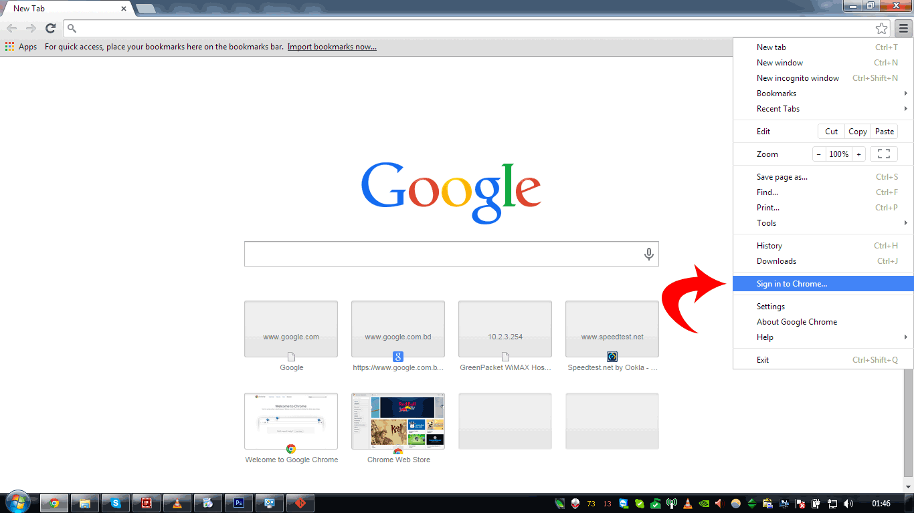
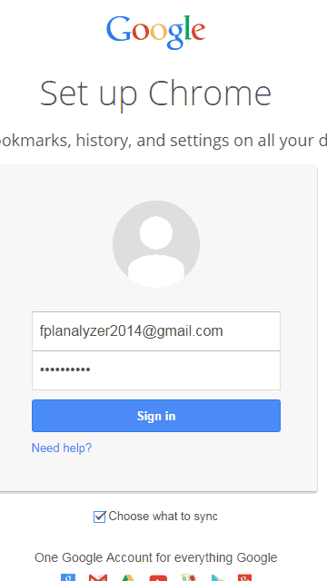
[Optional] Choose what to sync. Make sure "Bookmarks" is selected.
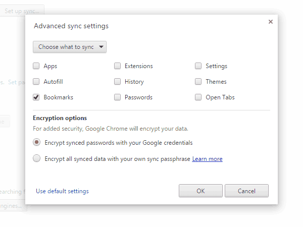
Go to fplanalyzer.com and create the bookmark by dragging button to bookmark toolbar
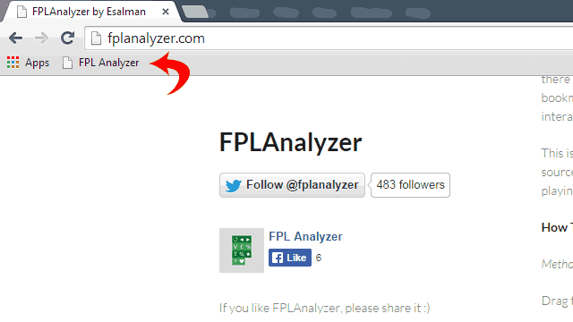
Open Chrome Android browser on your smartphone/tab. Bring up the menu and go to settings.
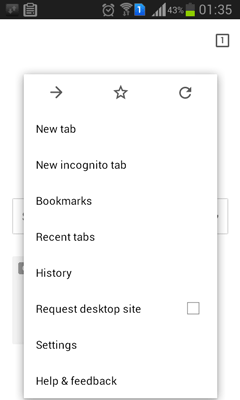
Sign in to Chrome
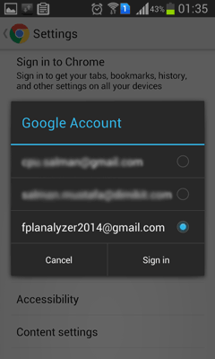
Check if the sync is working. Access Bookmarks from menu. By defualt mobile bookmark folder is open. You need to go to parent folder by tapping on Bookmarks.
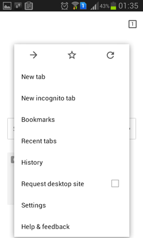
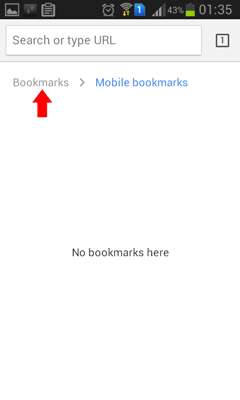
FPLAnalyzer bookmark should be available under desktop bookmarks
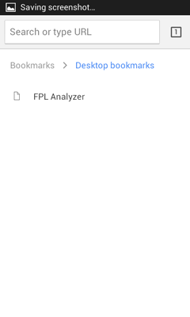
In case it is not, make sure Chrome sync us active on your Android settings
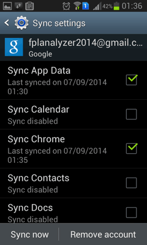
Go to FPL site
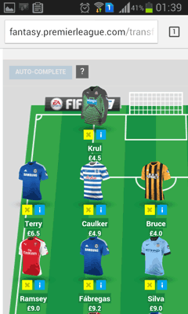
Type "fpl.." on address bar. The saved bookmark FPLAnalyzer should come up. Tap on it.
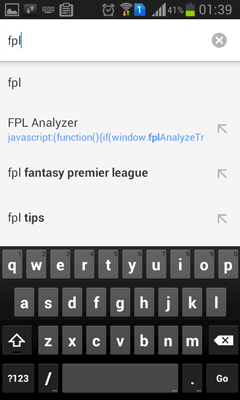
[Important] do the above step again. First time tap will load the script but won't trigger itself
After selecting the bookmarklet second time, FPLAnalyzer should be working.
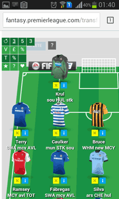
Enjoy!